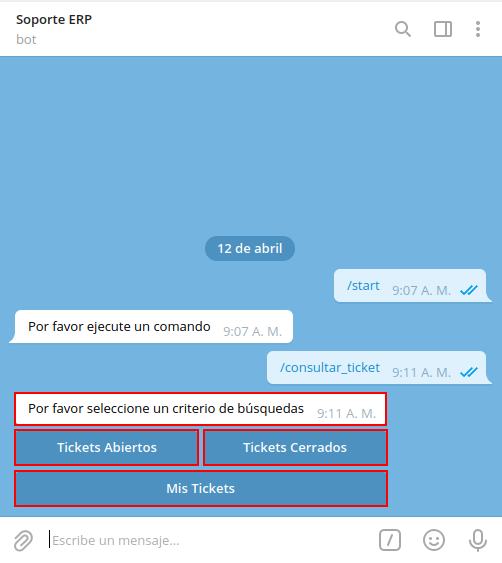

Consultar Tareas
Al abrir la conversación de Soporte ERP, seleccione la opción “INICIAR”, ubicada en la parte inferior de la conversación. Posteriormente podrá visualizar un mensaje donde el bot indica que Por favor ejecute un comando.
Imagen 1. Mensaje Principal “Por favor indique un comando”
Si desconoce el número de tarea que requiere consultar o simplemente requiere consultar todas las tareas que contiene el proyecto cuyos ticket se encuentran abiertos o cerrados. Puede realizar el siguiente procedimiento.
Se debe seleccionar el icono “/”, ubicado del lado derecho del campo “Mensaje”.
Imagen 2. Icono Barra “/”
Luego de seleccionar el icono “/”, podrá visualizar tres (3) opciones que representan diferentes comandos dentro de la conversación de Soporte ERP. Debe seleccionar la opción “/consultar_ticket”, para consultar los diferentes ticket del proyecto según lo requerido por el usuario.
Imagen 4. Opciones de Comandos a Ejecutar
Posteriormente, recibirá el mensaje “Por favor seleccione un criterio de búsqueda”, con la finalidad de filtrar la información por “Tickets Abiertos”, “Tickets Cerrados” y “Mis Tickets”.

Imagen 5. Criterios de Búsqueda
Note
Para el presente ejemplo, fue seleccionado el criterio de búsqueda “Tickets Abiertos”.
Al seleccionar el criterio de búsqueda “Tickets Abiertos”, el bot ejecuta dicha acción, filtrando las tareas por fecha de actualización y mostrando cuatro (4) tareas por mensaje.
Imagen 6. Selección de Criterio Tickets Abiertos
También se puede reenviar el mensaje recibido, seleccionando el icono “Reenviar”, ubicado del lado inferior derecho del mensaje.
Imagen 7. Icono Reenviar del Criterio Tickets Abiertos
Adicional a ello, se tienen las opciones de acceso a las diferentes tareas que se reflejan en el mensaje anterior, para consultar unicamente la tarea requerida.
Imagen 8. Opciones de Acceso a las Tareas del Mensaje
Finalmente, para navegar entre las diferentes tareas del proyecto, se tienen las opciones “Anterior” y “Siguiente”, que permiten avanzar a la siguiente página o retroceder a la anterior.
Imagen 9. Opciones Anterior y Siguiente de las Tareas del Mensaje
Seleccione la opción de acceso a la tarea que requiere consultar. Para ejemplificar el caso, se selecciona la opción #5316, correspondiente a la tarea “#5316” del “OpenProject”.
Imagen 10. Selección de Opción de Acceso a Tarea
Finalmente, se recibe un mensaje con la información detallada de la tarea, en el cual se indica lo siguiente:
Número de la tarea
Nombre de la tarea
Proyecto al que pertenece la tarea
Nombre y apellido del autor de la tarea
Fecha y hora en la que fue creada la tarea
Nombre y apellido del encargado de la tarea
Fecha y hora de la última actualización de la tarea
Estado en el que se encuentra la tarea
Descripción que contiene la tarea
Imagen 3. Mensaje con Consulta de Tarea
Adicional a ello, se muestra en la parte inferior del mensaje con la consulta, tres opciones que le permiten al usuario agregar un comentario a la tarea, cambiar el estado o la persona asignada de la misma.
Imagen 4. Opciones de la Tarea Específica
Seleccione la opción “Agregar Comentario”, para agregar un comentario a la tarea consultada.
Note
Esta opción también permite agregar una imagen.
Imagen 5. Opción Agregar Comentario
Al agregar un comentario desde el bot, se agrega el mismo de manera automática en dicha tarea en el OpenProject.
Imagen 6. Comentario de la Tarea en el Bot
Imagen 7. Comentario de la Tarea en el OpenProject
Seleccione la opción “Asignar A”, para agregar o cambiar el responsable de la tarea.
Imagen 7. Opción Asignar A
Al cambiar la persona responsable de la tarea desde el bot, se cambia de manera automática en dicha tarea en el OpenProject.
Imagen 8. Asignado A de la Tarea en el Bot
Imagen 9. Asignado A de la Tarea en el OpenProject
Seleccione la opción “Cambiar Estado”, para cambiar el estado en el que se encuentra la tarea.
Imagen 9. Opción Cambiar Estado
Al cambiar el estado de la tarea desde el bot, se cambia de manera automática en dicha tarea en el OpenProject.
Imagen 10. Estado de la Tarea en el Bot
Imagen 11. Estado de la Tarea en el OpenProject